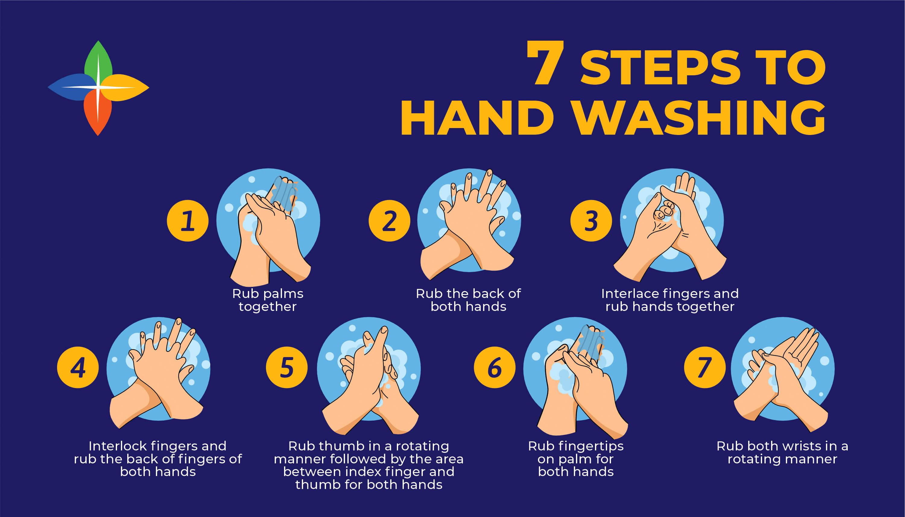
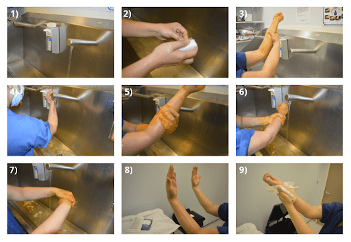

Types of Handwashing in Healthcare
Hand hygiene is one of the most effective ways to prevent healthcare-associated infections (HAIs). There are three main types of handwashing depending on the purpose, timing, and level of asepsis required.
Routine / Social Handwashing
This is the most basic type of handwashing. It aims to remove visible dirt, debris, and transient microorganisms using plain soap and water. It is performed frequently during daily nursing care activities.

Purpose: To reduce the spread of infection and maintain general hand hygiene.
Duration: 15–30 seconds.
When to Perform:
- Before and after patient contact.
- Before eating or after using the toilet.
- After removing gloves.
Main Steps:
- Wet hands with clean running water.
- Apply plain soap.
- Rub palms, backs of hands, between fingers, and under nails.
- Rinse and dry thoroughly.
Antiseptic Handwashing
This type uses antimicrobial soap or antiseptic agents to eliminate both transient and some resident microorganisms. It is used before aseptic procedures or after contact with contaminated materials.
Purpose: To destroy or inhibit microorganisms and reduce infection risk.
Duration: 30–60 seconds.
When to Perform:
- Before performing clean or sterile procedures.
- After handling body fluids or secretions.
- Before patient contact in critical care units.
Main Steps:
- Wet hands and apply antiseptic soap (e.g., chlorhexidine).
- Rub palms, fingers, and thumbs for 30–60 seconds.
- Rinse thoroughly under running water.
- Dry with a clean towel or air dryer.
Surgical Hand Scrub
The skin is a major source of microorganisms, and since it cannot be sterilized, surgical staff must wear sterile gloves. The purpose of the hand scrub is to reduce the number of bacteria on the hands and forearms before surgery.

Types:
- Antiseptic scrub with soap and water (3–5 minutes)
- Approved waterless antiseptic rub
Main Steps:
- Remove all jewelry, nail polish, and artificial nails.
- Inspect hands for sores and report any lesions.
- Wash visible dirt off hands first.
- Apply antimicrobial soap.
- Scrub fingers, between fingers, nails, and hands—keeping hands above elbows.
- Wash each arm from wrist to elbow.
- Rinse from fingertips to elbows (cleanest to dirtiest).
- Enter OR with hands raised and dry using a sterile towel from fingertips to elbows.